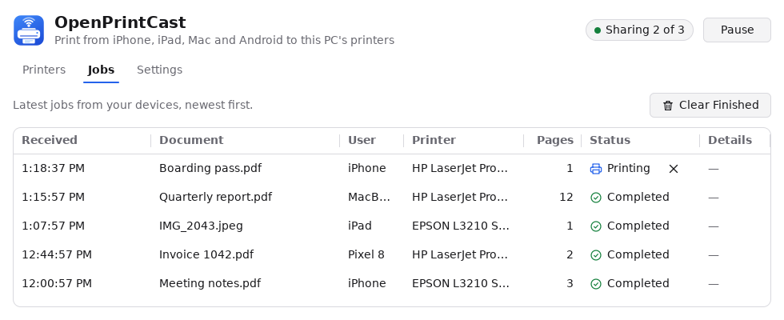
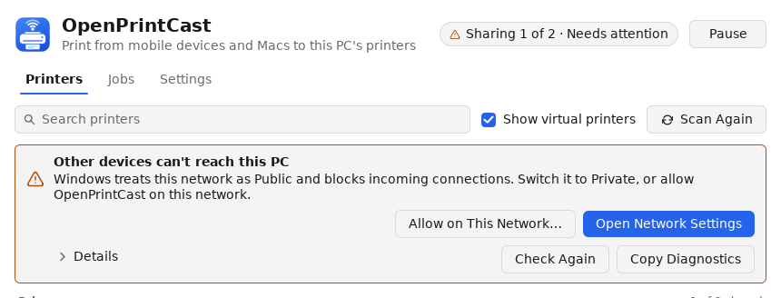
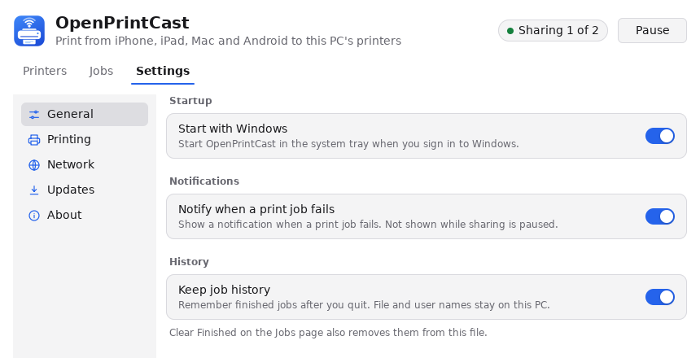

Keep your print settings
No new hardware. Paper size, color, duplex, page ranges and copies carry over, when your driver supports them.
OpenPrintCast turns the printers on your Windows PC into AirPrint printers. iPhone, iPad, Mac and Android find them on their own, with no drivers and nothing to install on the device.

No new hardware. Paper size, color, duplex, page ranges and copies carry over, when your driver supports them.
Your printers appear in the print dialog on iPhone, iPad, Mac and Android. Nothing to install on the device.
Save what you print as a PDF in a folder on your PC.
Printer status, ink and toner levels, and every job. Cancel one, or see why it failed.

If a Public network or the firewall keeps your devices out, OpenPrintCast tells you why and fixes the firewall in one click.

One native Windows app written in Go, with a small memory footprint. It waits in the system tray until you print.
OpenPrintCast runs in the system tray. Close the window and it keeps sharing.
On the Printers tab, turn on the ones you want to share.
Pick it in the print dialog on your device. On a Mac, add it once in Printers & Scanners.

Devices convert other formats before sending. IPP Everywhere is declared for printers that report supply levels, checked by the CUPS ipptool suites in CI (not PWG-certified).
Windows treats the network as Public, or the firewall blocks TCP 631. Use the banner on the Printers tab: Open Network Settings to switch to Private, or Allow in Windows Firewall (one UAC prompt, local subnet only). Copy Diagnostics gives you text to share when reporting a problem.
The driver doesn’t report paper sizes, orientation or resolution. Update it, then choose Scan Again.
Settings are in %APPDATA%\OpenPrintCast\config.json. Logs and job history are in %LOCALAPPDATA%\OpenPrintCast; open the current log from the tray menu.
Jobs are accepted over unencrypted IPP without authentication, so use a trusted network. Supply levels are read from the printer’s own address over read-only SNMP. The update check sends one HTTPS request to this repository’s releases and never installs anything. SNMP and automatic update checks can both be turned off in Settings.
Free and open source, for Windows 10 and 11. Pick amd64 for Intel and AMD, or arm64 for ARM, for example Snapdragon.
The installer is for all users and has an optional firewall rule. The standalone program runs from any folder. All releases